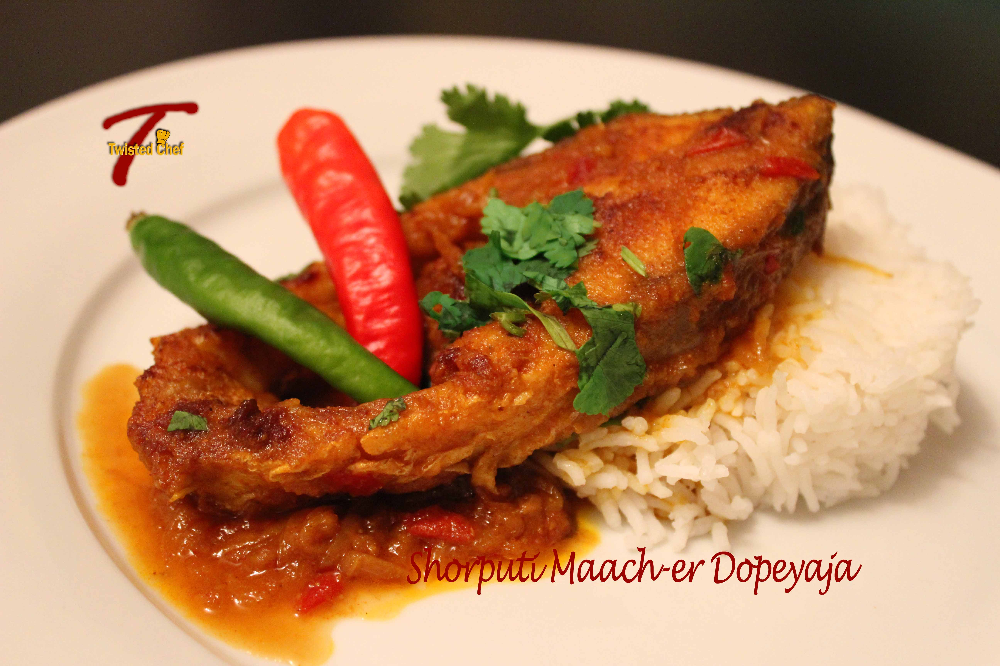
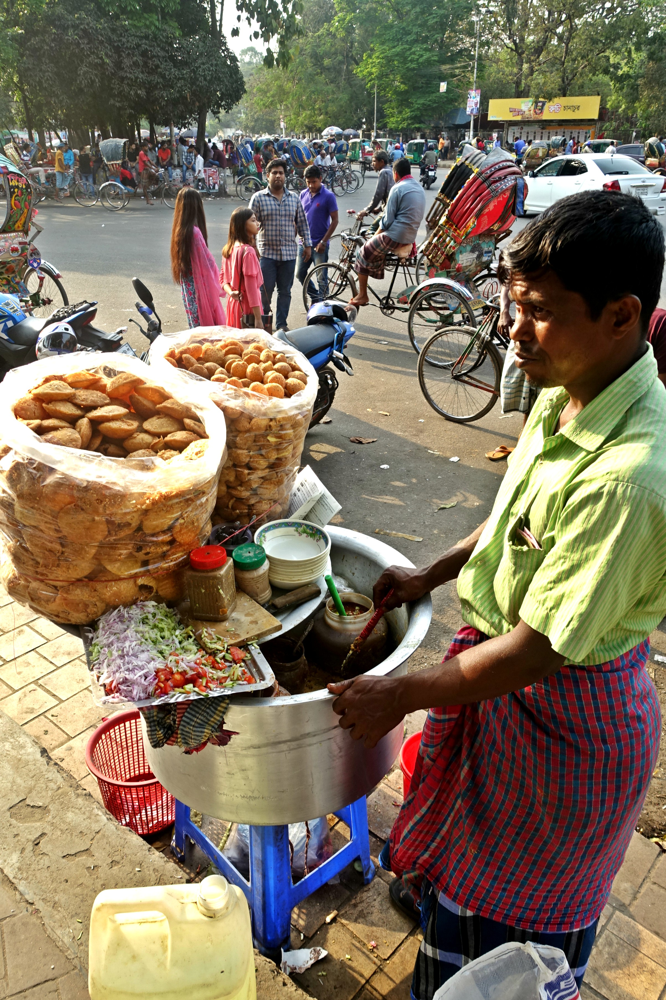

Introduction
Bangladeshi cuisine is a rich fusion of Mughlai, Indian, and Middle Eastern influences. Known for its bold flavors and diverse range of dishes, it reflects the country’s cultural and agricultural abundance.
Staple Foods
Rice and fish form the backbone of Bangladeshi meals. Lentils (dal), vegetables, and curries are commonly served alongside.
Popular Dishes
- Hilsa Curry (Ilish Bhuna): The national fish cooked with mustard and spices.
- Shorshe Ilish: Hilsa fish in mustard gravy, a Bengali classic.
- Biriyani: Spiced rice dish often made with mutton or chicken, especially famous in Dhaka.
- Panta Ilish: Fermented rice with fried Hilsa, typically eaten on Bengali New Year.
- Bhuna Khichuri: A rich rice and lentil dish served with meat or eggplant fries.
Sweets and Desserts
Bangladesh is also famous for its variety of sweets, often made from milk and sugar.
- Rasgulla
- Sandesh
- Chomchom
- Misti Doi (Sweet Yogurt)
Street Food
Street food is vibrant in cities like Dhaka and Chittagong. Items like fuchka (pani puri), chotpoti, and singara are immensely popular among locals and tourists alike.
